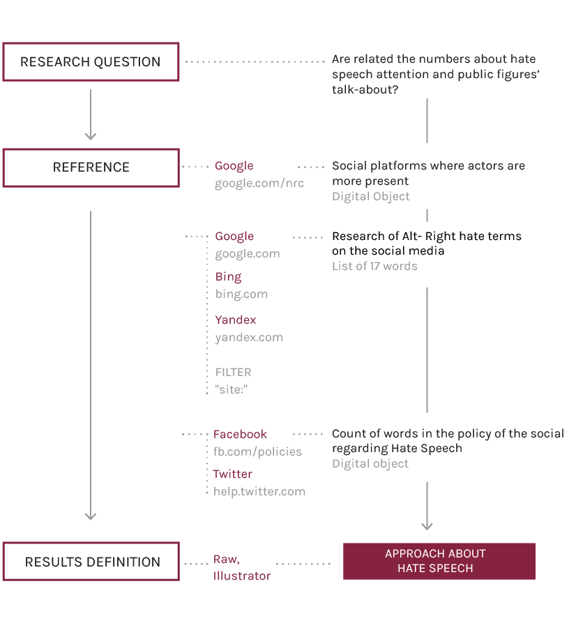

Description
At last the aim was to find out if there was a relationship between the presence of relevant public figures on social networks, the attention that these platforms give to hate speech in their policies (since it can be considered an indicator of rigidity and an assumption to censorship) and the presence of hate speech.
Using data calculated previously, we returned to observe the talking-about of the various actors on Facebook and Twitter, and then compared these quantities to grade of attention and deepening devoted by each social media to the topic of hate speeches. To give a number to these values, we collected the texts of the community policies related to this topic, and we counted the number of words.
To calculate the presence of hate speech, we looked for the previously selected hate terms used by Alt-Right on social media and we analyzed them quantitatively. To do this, we used three different search engines: Google, Bing and Yandex (an engine whose technology is used also by DuckDuckGo). The results varied widely - for example, only Google proved to be able to index the (((echoes))) symbol, so in the end we calculated mean values.
We can say that the presence of hate speech varies slightly, but above all we can see that the largest the presence of public figures on a given social media, the greater the number of words used in the policies to regulate hate speeches, and therefore a greater attention devoted to the topic.
Protocol

Counting the words in the policies regarding Hate Speech in all the social platforms.
Google Search for the words of the Alt-Right glossary using the string site:"website domain". Make a mathematical average of results with Excel .
Visualize with Illustrator the reaction of social networks to Hate Speech.